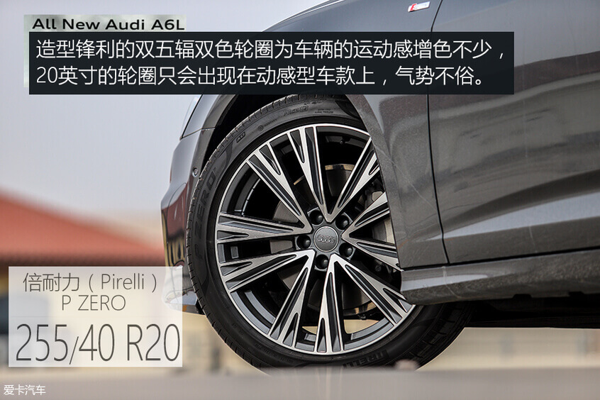
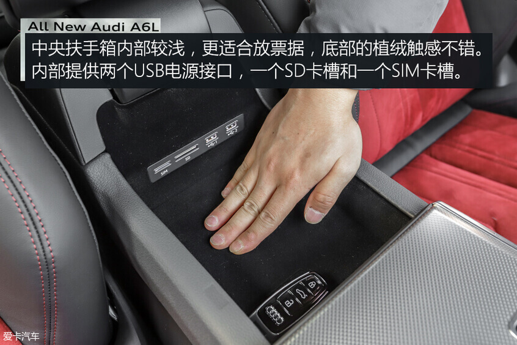
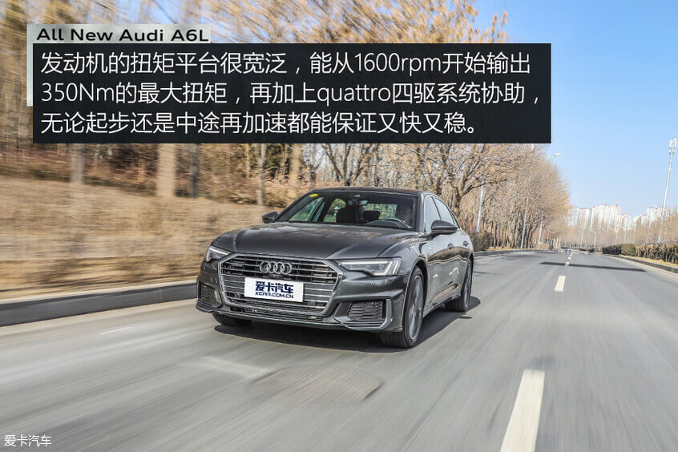
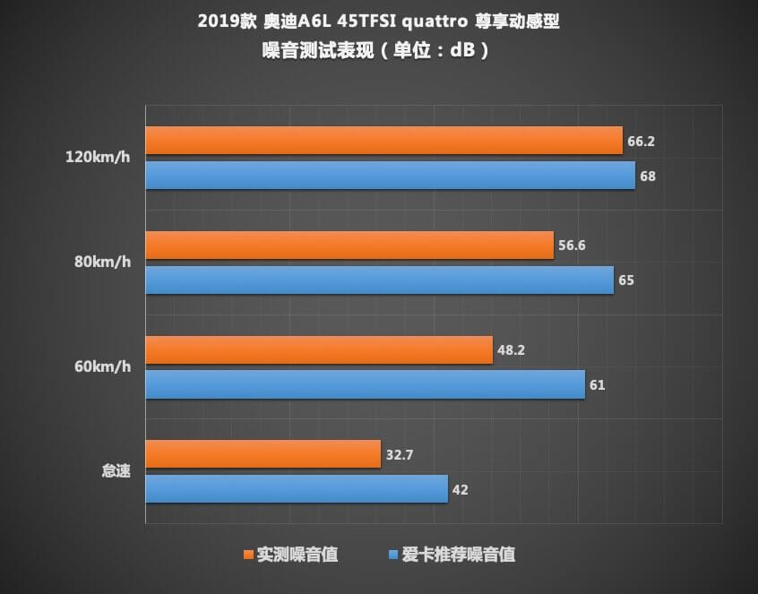

德味儿的优雅与精致 测奥迪A6L 45TFSI
2019-03-08驾驶一辆奥迪全新A6L行驶在城市中，你总是能牢牢吸引住人们的目光，无论是红绿灯还是停车场，都会有人打量甚至询问你，这或许是因为A6L所象征的身份和地位，但我认为更多的，是全新换代后的它真的让人充满好奇。德系三强中最后一个换代的奥迪可以说是性格大变，由成熟稳重转变为年轻活泼，但是其骨子里的精致与科技感却丝毫没变，整辆车充满了由仪式感带来的豪华体验。
本次测试的车型是奥迪全新A6L，全系共推出2.0T高/低功率和3.0T三种动力总成，并提供了致雅型和动感型两种外观套件，售价区间在40.28-69.48万元之间。我们试驾的车型是2.0T高功率的顶配车型，售价51.88万元。



奥迪全新A6L的外观有着明显的变化，从一个成熟稳重的大叔变成了一个时尚干练的小伙子，全车使用锋利的直线和折角进行勾勒，也难怪无论走到哪里都能引人侧目。
内饰的变化相比外观要更加明显，大量的横向设计元素不但拉宽了车内的视觉感受，同时丰富的层次感与立体感为车内营造出了“未来座舱”的感觉，而上下两块触摸大屏更是让内饰充满科技感。内饰部分的用料非常扎实，精细的做工更是体现出了“德国制造”的豪华水平。

皮质与Alcantara混搭的座椅只会出现在动感车型上，黑红的配色营造出了浓郁的运动风，主副驾驶均支持10向电动调节，配合座椅良好的包裹性，能让驾驶员轻松找到舒适的坐姿。试驾车的主副座椅和后排的两个座椅都配备了加热功能。

车内的常规储物空间齐全，随身携带的物品总能找到合适的位置，并且大部分储物格设计的比较大，实用性很好。行李厢的储物空间十分规整，地板很平，并且设计了网兜和锚点方便固定物品。
本次测试的全新一代奥迪A6L 45TFSI搭载了一台高功率版的2.0L涡轮增压发动机，虽然并未搭载了时下最热门的48V轻混系统，但其创造性的搭载了12V轻度混合动力系统。发动机最大功率165kW(224Ps）/5000-6000rpm,峰值扭矩350Nm/1600-4500rpm。传动系统方面，新车匹配的是7速双离合器变速箱。底盘采用的是前/后五连杆独立悬挂。
舒适好开是大多数人购车的第一诉求，而奥迪无疑是最为贯彻这一宗旨的，虽然这辆A6L有着很好的动力响应，准确的指向和灵活的车身姿态，但大部分人劳累一天之后，只想轻轻松松、舒舒服服的回家，而不是参与到晚高峰的驾驶乐趣里。

全新奥迪A6L在40/45TFSI车型中革命性的加入了12V轻混系统，不同于55TFSI车型上搭载的48V轻混系统，12V轻混系统的最大作用并非节约能耗，而是通过降低发动机燃烧的负荷点，达到减少低速起步时的顿挫和增强启/停功能运转平顺性的目的。另外，车辆在中高速行驶时收油，发动机会自动关闭，让车辆处于滑行状态，等到需要时再启动发动机，而这整个过程几乎让人无法察觉。

作为市场上将双离合变速箱优化的最好的厂家之一，我从未担心过这辆全新奥迪A6L的变速箱表现，测试过程中，这台7速S tronic变速箱也展现出了奥迪应有的水平，它与发动机的契合度非常高，在察觉到你有想加速的意图后，能够迅速而准确的完成降挡动作，换挡逻辑清晰、聪明，即便是在堵车的情况下，也很难让人察觉到丝毫顿挫感。
底盘的表现有些出乎意料，没有一味的通过软来提高舒适性，反而让微硬的初段为车辆提供了良好的侧向支撑，而悬挂的中后段则尽职尽责的将颠簸细腻的化解掉。
◆0-100km/h加速测试
在加速测试时，我们切换到运动模式，并关闭电子车身稳定系统，由于变速箱的保护机制，我们最终在1800rpm左右进行起步，得益于quattro四驱系统，车辆在起步时没有丝毫的打滑，整个加速过程一气呵成，变速箱换挡迅速，动力衔接的近乎完美，最终在3挡破百。我们测得的0-100km/h加速成绩为7.33s。

◆100-0km/h刹车测试
在刹车测试环节，奥迪A6L的表现很稳定，没有出现明显的热衰减现象。另外，在全力刹车时，悬挂能够给予车辆良好的支撑，悬挂的压缩与拉伸并不明显，让车辆保持了良好的姿态。最终我们测得的100-0km/h的刹车成绩为35.79m，表现很优秀。
◆绕桩测试
作为一辆豪华中大型车，奥迪A6L在绕桩时的表现可圈可点。在quattro四驱系统的作用下，整个绕桩过程表现的很从容，稳定性很好。转向灵活且准确，车头的响应也非常迅速，悬挂在连续重心转移时依旧能提供良好的支撑，让车尾能够迅速反应，整辆车灵活的不像5m长的车型。随着绕桩速度的不断提升，后轮开始失去抓地力，车辆会出现一种可控的滑动，电子车身稳定系统并没有粗暴的介入。
◆油耗测试
在油耗测试期间，我们驾驶奥迪A6L 45TFSI quattro尊享动感型共行驶了116.5km，平均时速为28.8km/h。车上仅有驾驶员一人，并附带少量行李，空调全程保持24℃ AUTO状态。最终实测的平均油耗为8.9L/100km。不烦人的自动启停功能一直没有被关闭，加上高速行驶时收油可关闭发动机滑行，这两点为降低油耗做了不小的贡献。
◆噪音测试
整车NVH控制依旧保持现款A6L的高水准，倍耐力P ZERO轮胎虽然以运动性见长，但在静音性上表现也很出色。整车对于风噪的隔绝非常出色，能够令驾乘者感受到惬意舒适的车内氛围。

编辑点评：
奥迪A6L此次换代可以算是全方位的提升，年轻化的外观与充满科技感的内饰都让它的受众群体进一步扩大，而奥迪在车身上设计的一些诸如开门方式、安全带电动回收等等小心思，都让体验变得充满仪式感，这些细小但却是日常驾驶中频繁接触的细节能给人留下深刻的印象。最重要的还是它营造的轻松舒适的驾驶氛围，对于大部分消费者来说，真的不需要过多的驾驶参与感，这样简单好开就是最棒的。